만두
줄거리
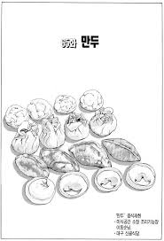
진수의 친구들과의 모임 후 틀어져 버린 진수의 마음을 녹인 성찬의 정성담긴 만두! 한 번 만들어 볼까요???
재료
꿩고기, 두부 한 모, 숙주나물 한 봉지, 양파 한 개, 계란 한 개, 부추 한 줌, 소금 약간, 마늘, 들기름, 유자배청(고기 잡내 제거용)
레시피
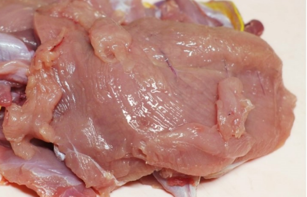
1. 꿩고기를 준비합니다.
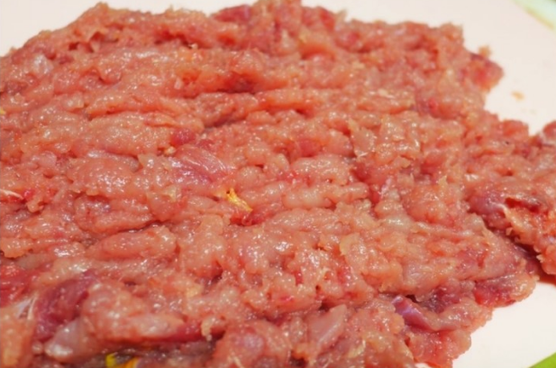
2. 꿩고기를 썰어서 다져줍니다.
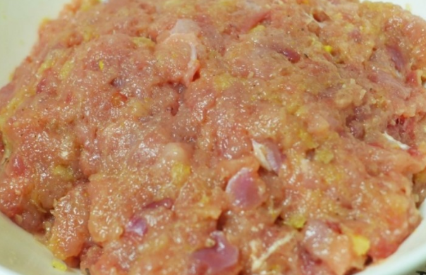
3. 다져 놓은 꿩고기에다가 소금 약간, 들기름 약간,
유자배청을 넣어주고 어느 정도 주무른 후 재워줍니다.
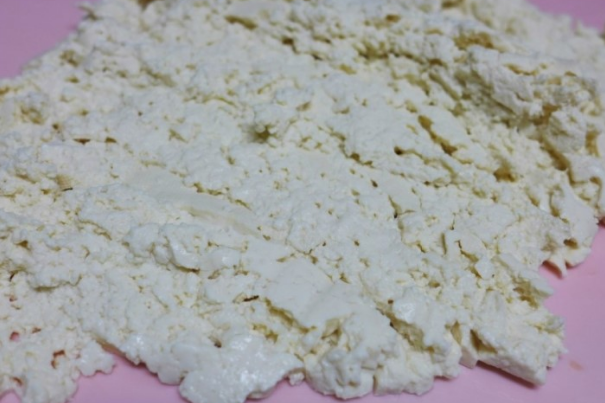
4. 두부를 으깨어서 면 보자기에 짜서 물기를 제거한다.
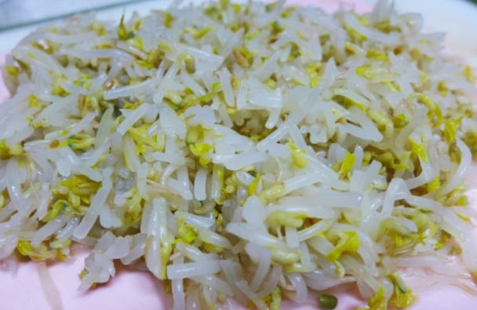
5. 소금 넣고 데친 숙주나물을 잘게 썰어서
면 보자기에 짜서 물기를 제거한다.
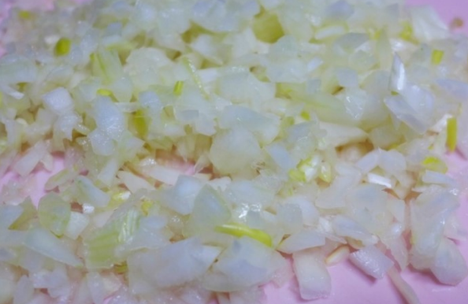
6. 양파도 역시 썰어서 물기를 제거한다.
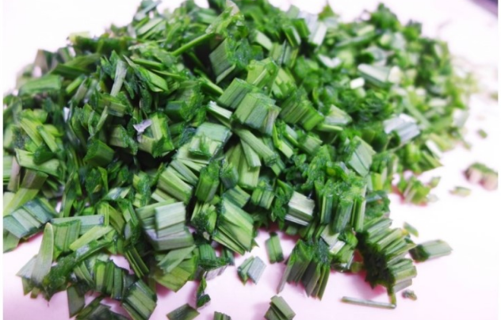
7. 마지막으로 부추도 잘게 썰어 준비한다.
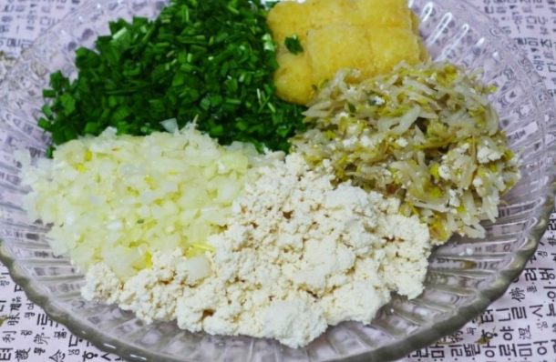
8. 마늘까지 더해서 만두 속 재료는 끝!
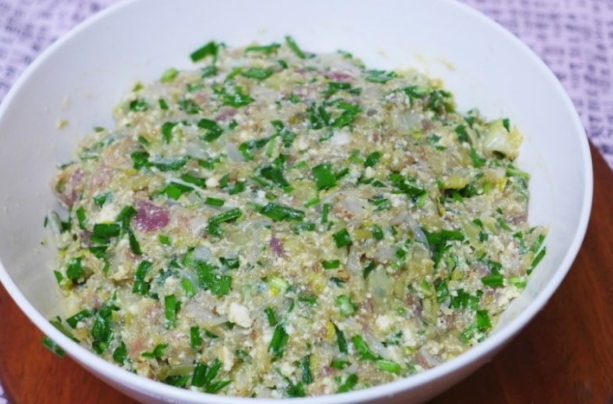
9. 재워 놓은 꿩고기에 준비해 놓은 재료를 섞어줍니다.
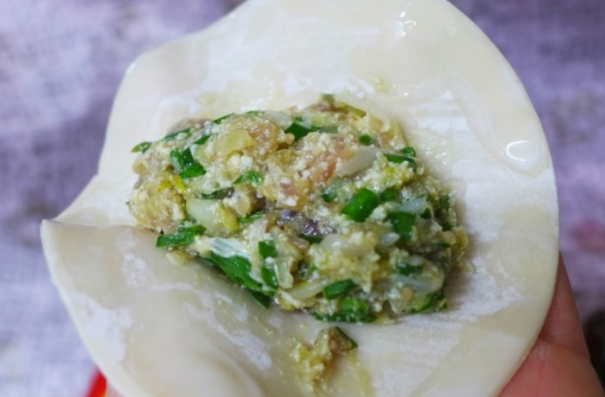
10. 만두피에 만두소를 넣어줍니다.
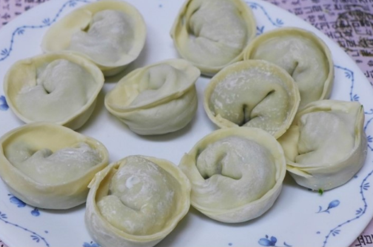
11. 만두도 준비 완료!
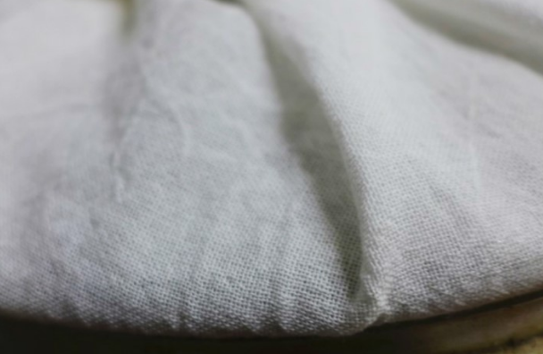
12. 면 보자기 위에 만두를 가지런히 놓습니다.
만두 위를 면 보자기로 덮어줍니다.
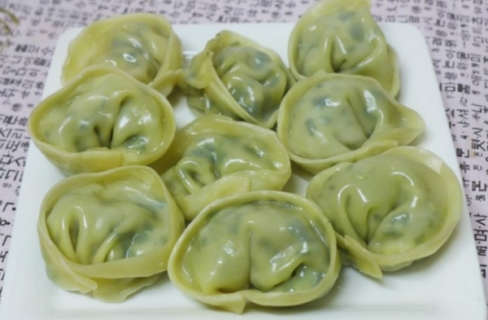
*****잘 쪄주면 완성*****